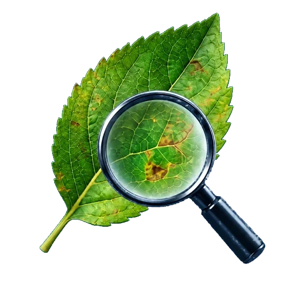

Products, interfaces and experiments from KashCrop. Pick something that catches your eye.
A world of useful things.Designed & engineered by KashCrop

Drag to explore · Select to inspect
Not just what we do. What it feels like.
KashCrop Innovations is a product and engineering studio in Kashmir, incubated at SKIIE, SKUAST-Kashmir. These are real product captures and clearly marked concept artwork—not claims of production deployment.